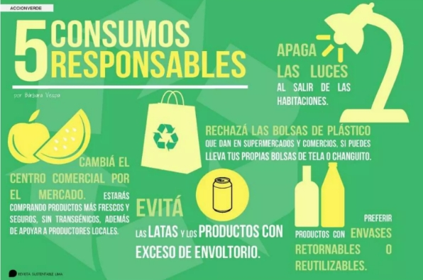
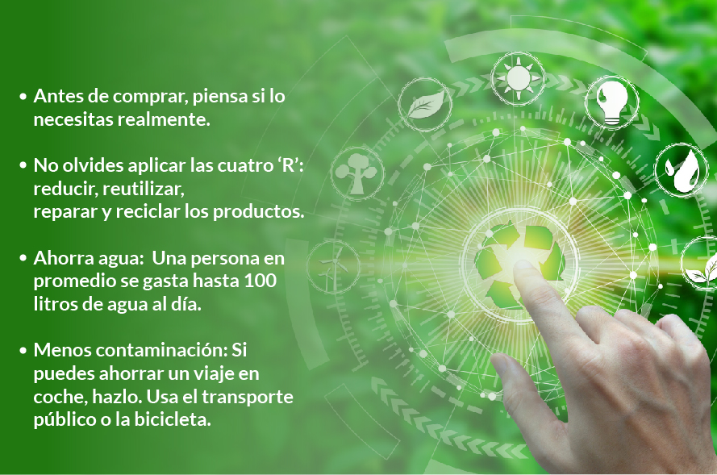

El Objetivo 12 busca asegurar modalidades de consumo y producción sostenibles, un paso vital para preservar los medios de vida de las generaciones actuales y futuras. A medida que la población mundial se proyecta a alcanzar casi 9,800 millones de personas para 2050, el desafío se vuelve más apremiante: necesitamos casi tres planetas para mantener los estilos de vida actuales. Este contexto nos obliga a replantear nuestras prácticas y hábitos de consumo, promoviendo un enfoque que priorice la sostenibilidad y el respeto por el medio ambiente. Fomentar la producción responsable implica no solo adoptar tecnologías limpias y procesos eficientes, sino también garantizar que los recursos se utilicen de manera equitativa y se minimice el desperdicio. Al mismo tiempo, los consumidores deben convertirse en agentes activos de cambio, eligiendo productos que respeten el entorno, apoyando a empresas que implementan prácticas sostenibles y reduciendo su huella ecológica. La colaboración entre gobiernos, empresas y ciudadanos es esencial para lograr un impacto significativo. Esto incluye la creación de políticas que incentiven la sostenibilidad, así como la educación y sensibilización sobre la importancia de un consumo consciente. Solo a través de un esfuerzo conjunto podremos asegurar un futuro próspero y sostenible, donde se respeten los límites del planeta y se garantice el bienestar de las generaciones venideras.
La expansión económica del último siglo ha venido acompañada de un deterioro ambiental que amenaza los sistemas de los que depende nuestra supervivencia. Si queremos asegurar un futuro próspero, debemos transformar nuestros hábitos de consumo. Esto implica adoptar un enfoque más responsable que considere el ciclo de vida de nuestros productos y fomente la participación activa en acuerdos multilaterales sobre medio ambiente. Este cambio no solo debe centrarse en la reducción del impacto ambiental, sino también en la promoción de la justicia social y económica. Al optar por productos sostenibles, los consumidores pueden apoyar prácticas que respeten tanto al medio ambiente como a los derechos laborales de quienes los producen. Además, es crucial fomentar la economía circular, donde los recursos se reutilizan y reciclan, minimizando el desperdicio y prolongando la vida útil de los productos.
Las empresas tienen un papel crucial en la promoción del consumo responsable. Para ello, pueden adoptar prácticas sostenibles en sus procesos de producción, minimizando el impacto ambiental mediante el uso de recursos renovables y la reducción de residuos. La transparencia en la cadena de suministro es fundamental; al proporcionar información clara sobre el origen de sus productos y las condiciones laborales, las empresas pueden generar confianza entre los consumidores. Además, es esencial que las empresas se comprometan a innovar y desarrollar productos que sean más sostenibles a lo largo de su ciclo de vida. Esto incluye desde el diseño de productos con materiales reciclables hasta la implementación de procesos de producción que utilicen menos energía y agua. Las empresas también pueden fomentar la economía circular, ofreciendo programas de devolución y reciclaje que permitan a los consumidores participar activamente en la reducción de residuos.
Los consumidores pueden desempeñar un papel crucial en la promoción de la producción y consumo responsables al optar por productos sostenibles, reducir el desperdicio de alimentos, y apoyar a productores locales. Adoptar un enfoque minimalista, reutilizar y reciclar, y evitar el uso de plástico de un solo uso son acciones efectivas. Además, elegir marcas que implementen prácticas sostenibles, mantenerse informado sobre temas ambientales y participar en iniciativas comunitarias son pasos importantes. Al abogar por políticas de consumo responsable y adoptar hábitos que reduzcan la huella ecológica, los consumidores pueden influir positivamente en la producción y contribuir a un futuro más sostenible.
Cada uno de nosotros tiene el poder de hacer una diferencia. Visita www.un.org/es/actnow para obtener más información sobre cómo puedes contribuir a un futuro más sostenible.
| Datos destacables | Metas del objetivo 12 |
|---|---|
| El rastro material per cápita en los países de renta alta es 10 veces superior a la de los países de renta baja. El mundo también va muy mal encaminado en sus esfuerzos por reducir a la mitad el desperdicio y las pérdidas de alimentos per cápita para 2030. Las crisis mundiales provocaron un resurgimiento de las subvenciones a los combustibles fósiles, que casi se duplicaron de 2020 a 2021. Ha aumentado la información sobre sostenibilidad empresarial y sobre políticas de contratación pública, pero ha decrecido en cuanto al consumo y al seguimiento del turismo sostenibles. El consumo y la producción responsables deben formar parte integral de la recuperación tras la pandemia y de los planes de aceleración de los Objetivos de Desarrollo Sostenible. Es crucial implementar políticas que apoyen un cambio hacia prácticas sostenibles y desvinculen el crecimiento económico del uso de los recursos. | 12.1 Aplicar el Marco Decenal de Programas sobre Modalidades de Consumo y Producción Sostenibles, con la participación de todos los países y bajo el liderazgo de los países desarrollados, teniendo en cuenta el grado de desarrollo y las capacidades de los países en desarrollo 12.2 De aquí a 2030, lograr la gestión sostenible y el uso eficiente de los recursos naturales 12.3 De aquí a 2030, reducir a la mitad el desperdicio de alimentos per capita mundial en la venta al por menor y a nivel de los consumidores y reducir las pérdidas de alimentos en las cadenas de producción y suministro, incluidas las pérdidas posteriores a la cosecha 12.4 De aquí a 2020, lograr la gestión ecológicamente racional de los productos químicos y de todos los desechos a lo largo de su ciclo de vida, de conformidad con los marcos internacionales convenidos, y reducir significativamente su liberación a la atmósfera, el agua y el suelo a fin de minimizar sus efectos adversos en la salud humana y el medio ambiente 12.5 De aquí a 2030, reducir considerablemente la generación de desechos mediante actividades de prevención, reducción, reciclado y reutilización 12.6 Alentar a las empresas, en especial las grandes empresas y las empresas transnacionales, a que adopten prácticas sostenibles e incorporen información sobre la sostenibilidad en su ciclo de presentación de informes 12.7 Promover prácticas de adquisición pública que sean sostenibles, de conformidad con las políticas y prioridades nacionales 12.8 De aquí a 2030, asegurar que las personas de todo el mundo tengan la información y los conocimientos pertinentes para el desarrollo sostenible y los estilos de vida en armonía con la naturaleza 12.a Ayudar a los países en desarrollo a fortalecer su capacidad científica y tecnológica para avanzar hacia modalidades de consumo y producción más sostenibles 12.b Elaborar y aplicar instrumentos para vigilar los efectos en el desarrollo sostenible, a fin de lograr un turismo sostenible que cree puestos de trabajo y promueva la cultura y los productos locales 12.c Racionalizar los subsidios ineficientes a los combustibles fósiles que fomentan el consumo antieconómico eliminando las distorsiones del mercado, de acuerdo con las circunstancias nacionales, incluso mediante la reestructuración de los sistemas tributarios y la eliminación gradual de los subsidios perjudiciales, cuando existan, para reflejar su impacto ambiental, teniendo plenamente en cuenta las necesidades y condiciones específicas de los países en desarrollo y minimizando los posibles efectos adversos en su desarrollo, de manera que se proteja a los pobres y a las comunidades afectadas |